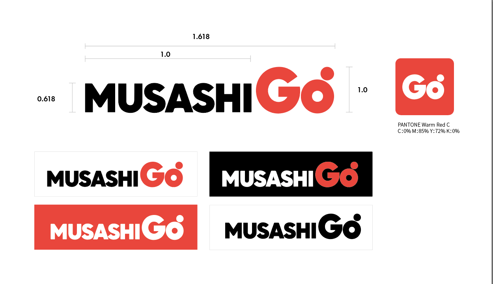
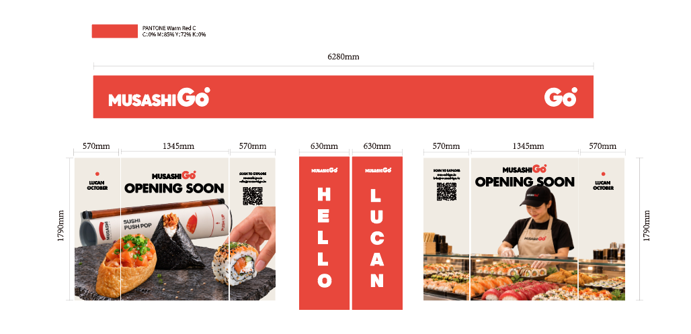
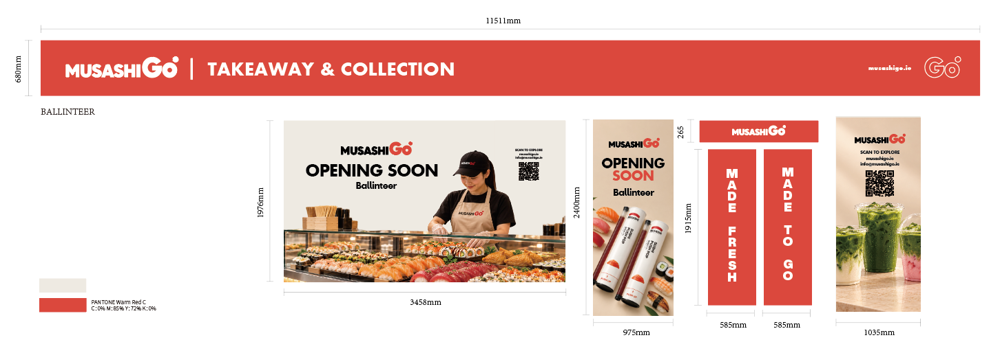

StatusStrategy and design proposals Business outcomes to be validated
MUSASHI GO / Storefront concept
01 / Overview
Bring familiar Japanese flavours into everyday routines.
MUSASHI GO aims to build a lighter, more accessible dining sub-brand on the strength of its parent brand. The goal is to make a meal easier to choose and collect during an office lunch break, on the way home or between shopping stops.
Project IKI envisions small, positive experiences becoming everyday habits. This case study connects brand strategy, identity exploration and storefront design into a coherent narrative.
Small Moment → Good Experience → Repeat → Habit → Everyday Life
02 / Challenge
Preserve brand trust while making choice and collection easier.
GO needs to carry forward the familiarity and trust associated with MUSASHI while expressing a more direct, easy-going way to buy a meal. Menus, identity, storefronts and ordering should work together to explain what is available, how to choose and when to collect.
Age ranges, competitor price bands and subjective ratings in the original project document are research hypotheses. This case study organises audiences around dining tasks and keeps those assumptions distinct from established market findings.
03 / Audience insight
Define the dining task first, then the audience.
A
Weekday lunch / Collection on the way home
Prioritise time-conscious customers who already know MUSASHI. The key information is meal combinations, portion sizes, prices and estimated collection times.
B
Shopping breaks / Before or after the cinema
Help passing customers recognise the offer quickly and help groups accommodate different preferences for hot or cold food and portion sizes. Specific preferences and time windows still require interviews and order data.
04 / Strategic decisions
Three choices define the role of GO.
01
Use parent-brand endorsement to carry trust forward
Retain recognisable MUSASHI cues, with GO expressing movement and takeaway convenience. A transitional “by / part of MUSASHI” endorsement could be explored, with visual proportions informed by recognition testing.
02
Build a focused selection of meals
Organise a small set of clear combinations around hot / cold and light / filling choices. Menu decisions should be tested against preparation time, takeaway quality and contribution margin; specific SKUs remain undecided.
03
Connect discovery with repeat purchase
Use ATTRACT → DESIRE → ENJOY → REMEMBER → REPEAT as the experience framework, connecting storefront discovery, online choice, collection and the next visit.
05 / Visual identity
Make GO feel approachable, energetic and trusted.
The supplied identity studies explore horizontal combinations, a standalone GO symbol, circular lockups and red / black / white applications. MUSASHI carries parent-brand recognition, while GO adds movement and a memorable focal point. These are design proposals; a final approved version has not been identified.

Horizontal wordmark / Standalone GO symbol / Monochrome and reversed applications — design proposals
Before finalising identity guidelines, test recognition at small sizes and at a distance, parent-brand association and single-colour print performance.
06 / Selected execution
From street-level recognition to food and craft in the window.
The fascia establishes recognition; the windows communicate food, preparation and opening information. Red brand elements create continuity, while food and staff imagery support appetite appeal and trust. QR codes provide a browsing entry point. Dimensions shown in the supplied artwork should be checked before production.
Lucan / Fascia and window visualisation

Lucan / Fascia, window and door graphic proposalsBallinteer / Fascia and window visualisation concept

Ballinteer / Takeaway & Collection messaging and door graphics
07 / Ordering experience
Organise ordering around completing a meal purchase.
The original proposal calls for fewer layers of website navigation. The recommended sequence puts the menu first, followed by price, portions, allergen and collection information, then ordering, payment and confirmation in a continuous flow. This is an experience direction; the supplied materials do not include an implemented GO ordering page.
01
Browse the menu
Group combinations by hot / cold and light / filling options. Use food photography and clear total prices to make comparison easier.
02
Confirm collection
Show the collection location, available time and order details before payment, making the wait more predictable.
03
Complete the order
After payment, provide clear confirmation and collection instructions. Design confirmation emails around the actual capabilities of the ordering system.
Packaging, stickers and further standalone GO icon applications remain concept directions in the project document. They should be tested alongside the mobile ordering experience across touchpoints.
08 / Validation & next steps
Validate the experience before reporting growth.
The supplied materials demonstrate strategy and visual proposals but contain no post-launch business results. The following is a pilot measurement framework, with targets to be established from actual data.
RecognitionParent-brand association / Distance and small-size recognition
Next steps: confirm the identity direction, menu and service commitments; complete packaging and ordering prototypes; pilot in office or shopping settings and set targets against measured baselines.
Project notes
Content is adapted from the supplied MUSASHI GO project document and brand strategy analysis, with imagery from six design attachments. The strategy report covers research up to 24 September 2026. The page follows the structure of the supplied Game for Peace case study, with both original CSS styles embedded and selectable at the top. Individual responsibilities and the final approved design scope were not specified in the attachments and have therefore been left unassigned.